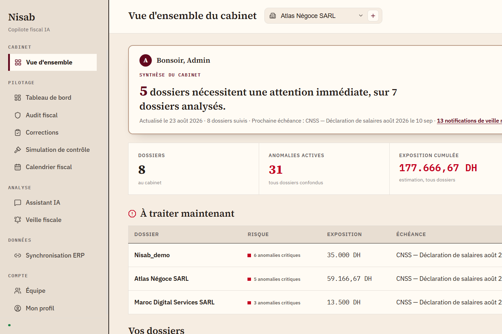
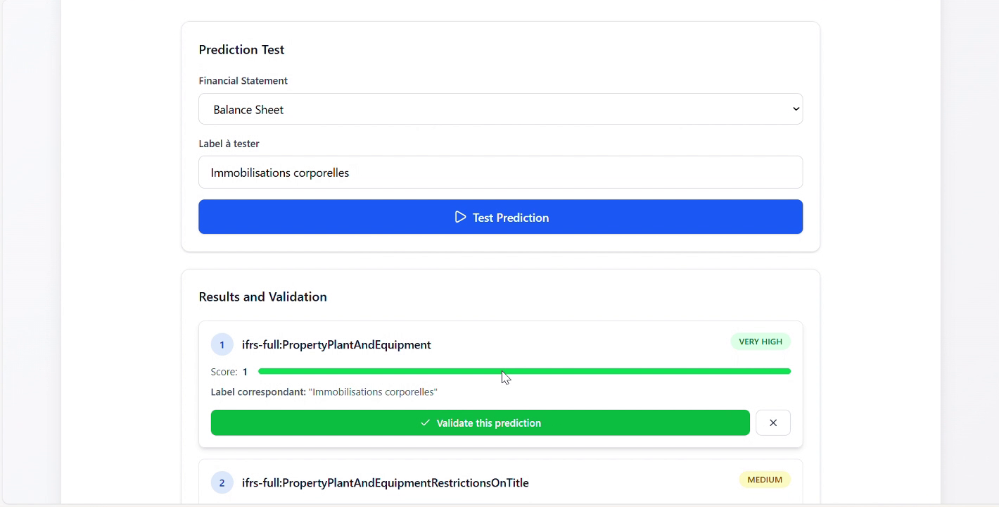
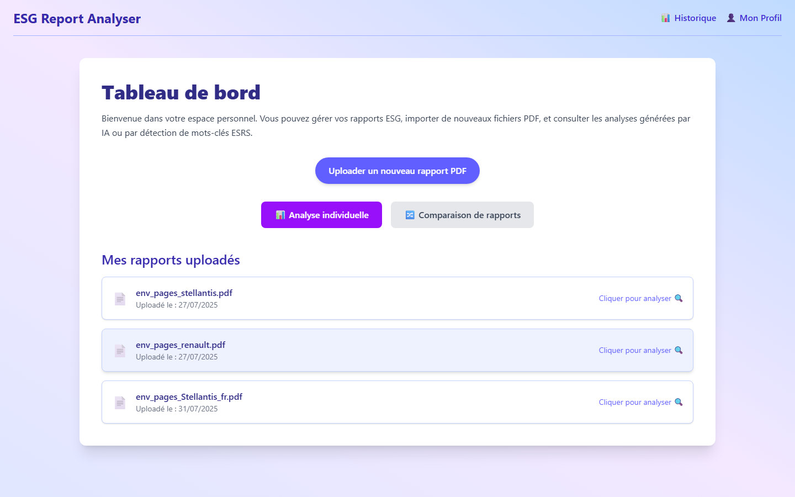
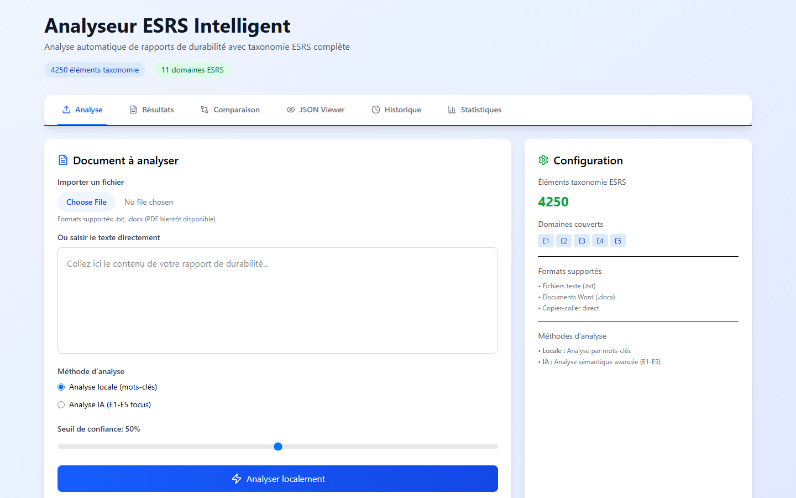
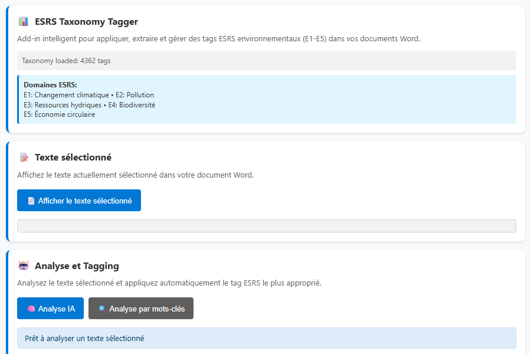
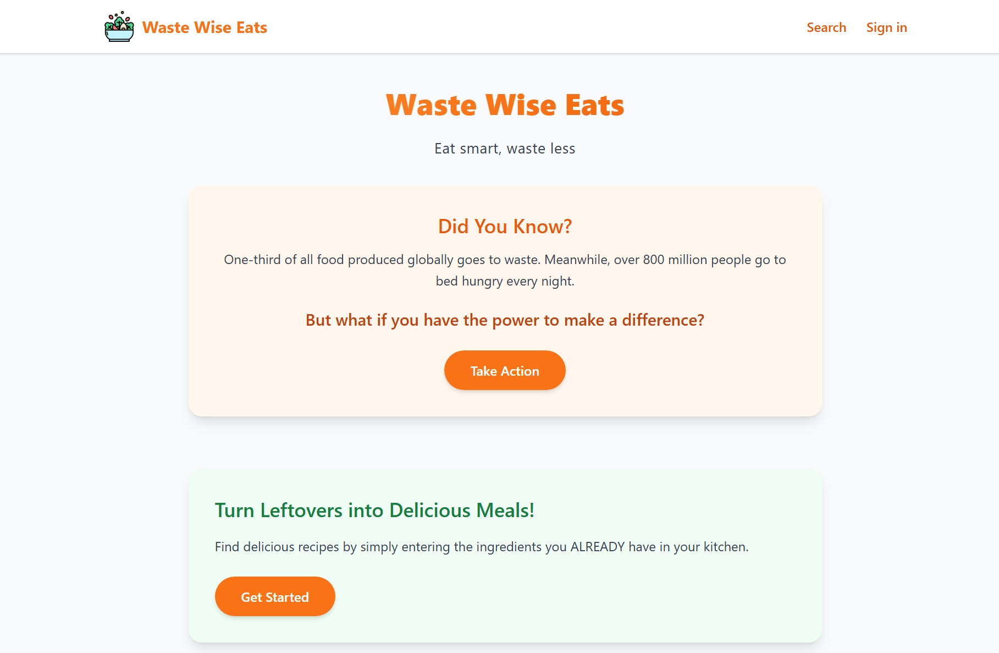
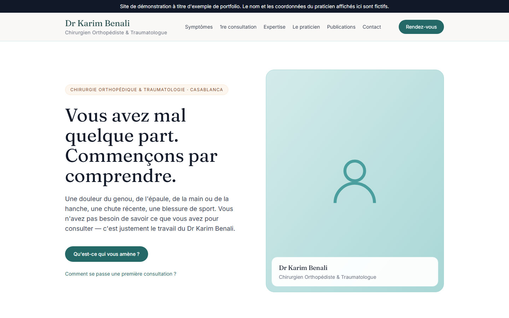
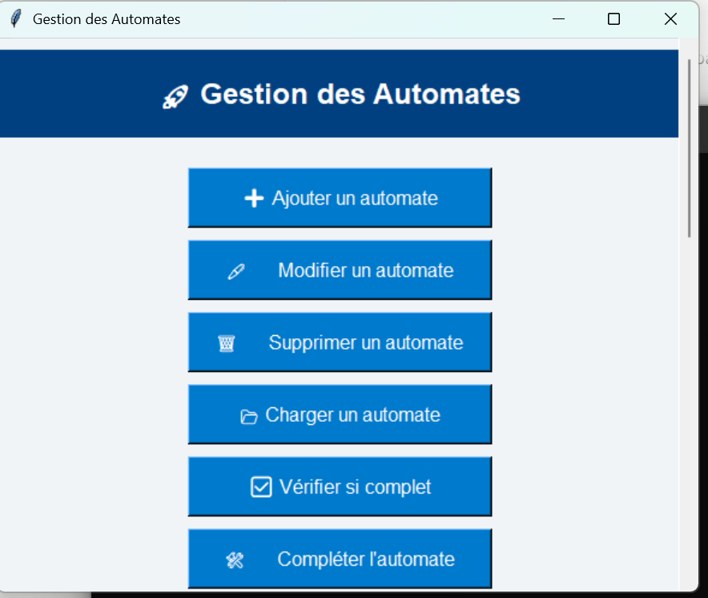
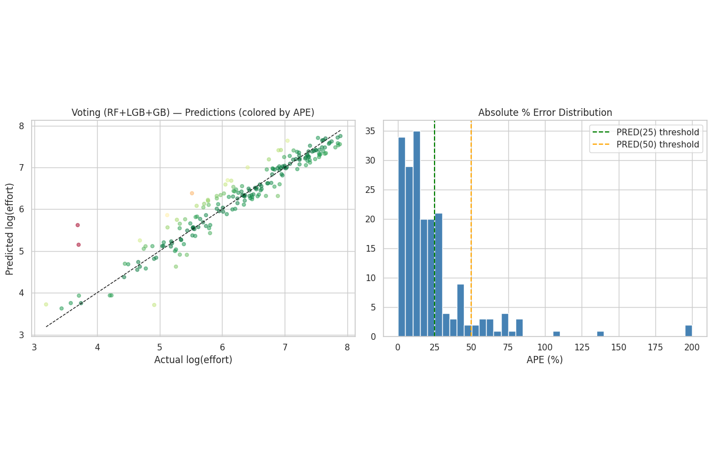
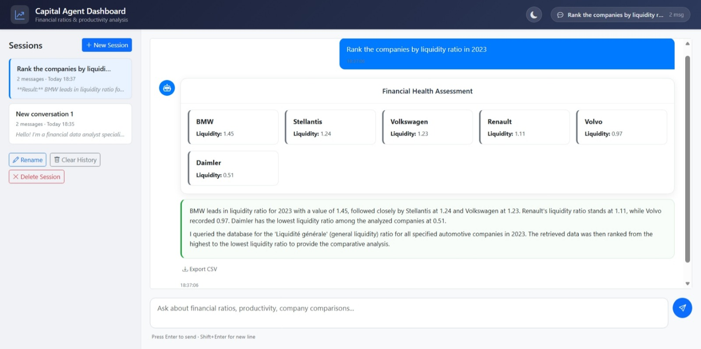

Open to AI / software engineering opportunities
Bouchra Rguibi
AI & Full Stack Engineer · ENSAM Casablanca
$ whoami
I build AI systems that turn complex documents, data, and regulations into usable software, from fiscal copilots and RAG pipelines to structured data applications.
Selected work

Nisab, cabinet overviewA fiscal copilot for Moroccan accounting firms. It reads accounting entries, flags what does not comply with tax rules, and answers fiscal questions in plain language, citing the exact CGI article or Bulletin Officiel behind every answer.
stack fastapi / postgresql / react / react native / rag
Visit live site View repositoryDemo login: demo@nisab.app / NisabDemo2026!, read only access to a sample cabinet's dossiers.

IFRS Tag Manager, tagging interfaceAn end to end system for automated IFRS and ESEF report tagging, from raw XBRL data to a production interface. The SBERT model behind it reaches 96% top three accuracy across more than 6,000 tags. Live on the client's site, and presented at a LinkedIn webinar.
stack sbert / mcp / react
Built for a client engagement. Shown as a case study, source kept with the client.

ESG Report Analysis, dashboardA sustainability report analyzer. Upload a PDF or XHTML report and get a keyword based ESG score, plus an AI assisted comparison between two reports, backed by authentication, a dashboard, and history.
stack fastapi / react / tailwind
Visit live site View repositoryDemo login: demo@example.com / Demo1234!, preloaded with sample analysis and comparison results.

ESG Auto Tag Manager, taxonomy viewA React app that automates ESRS taxonomy tagging across sustainability reports, so a reviewer spends their time checking judgment calls instead of hunting for tags.
stack react / esrs taxonomy
View repository
WordTagger, word add inA Microsoft Word add in that manages ESRS tags directly inside a document, so a reviewer never has to leave the page they are reading.
stack office add in / node
View repository
Waste Wise Eats, home pageA recipe app that starts from what is already in your kitchen, built on the Spoonacular API, aimed at cutting down food waste one meal at a time.
stack django / react
Visit live site View repository
Orthopedic Surgeon Site, marketing pageA marketing site built for an orthopedic surgeon, covering the practice, specialties, and booking information. Built for performance and search visibility from the start: server rendered pages, optimized images, and structured metadata throughout.
stack next.js / typescript / tailwind
Visit demoThe demo uses a fictional practitioner identity. Kept unlisted until the real client publishes it themselves.

Automates, finite automata builderA desktop GUI tool for building and analyzing finite automata, DFA and NFA. Create states, transitions, and alphabets, then run determinization and minimization, rendered as a graph.
stack python / tkinter / graphviz
View repository
Effort Estimation, model evaluationAn end to end machine learning pipeline that estimates software development effort straight from a GitHub repository's own data, reaching an R squared of 0.893 on the held out test set.
stack python / scikit learn / pandas
View repository
Capital Agent, financial analysis viewA multi agent system for financial data analysis, built on an existing base that I extended and brought into working, production shaped form.
stack adk / bigquery
Repository kept private, the base code was not originally mine.
A reinforcement learning approach to compressing DistilBERT: a PPO agent learns which layers to prune, trained in a custom Gymnasium environment and evaluated on SST-2.
stack pytorch / gymnasium / distilbert
Report available on request.